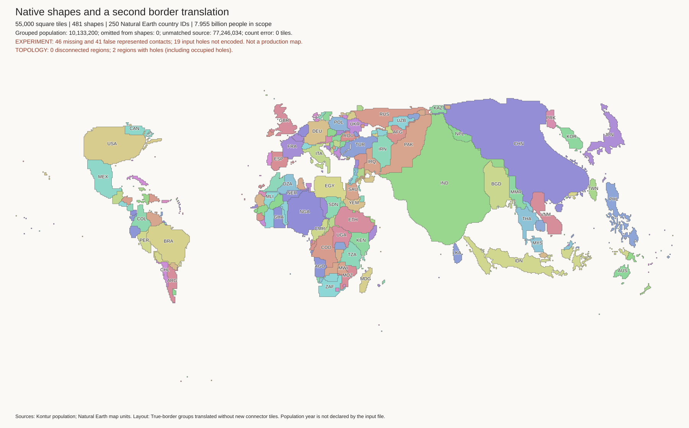
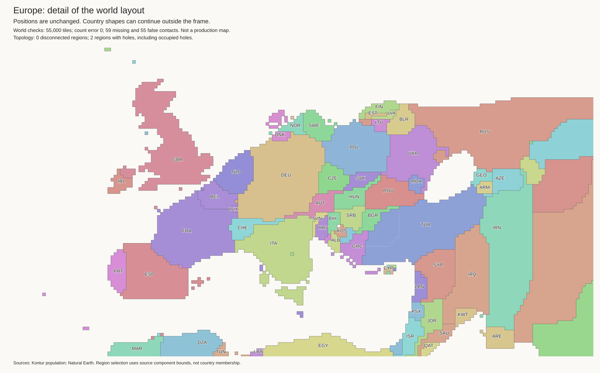
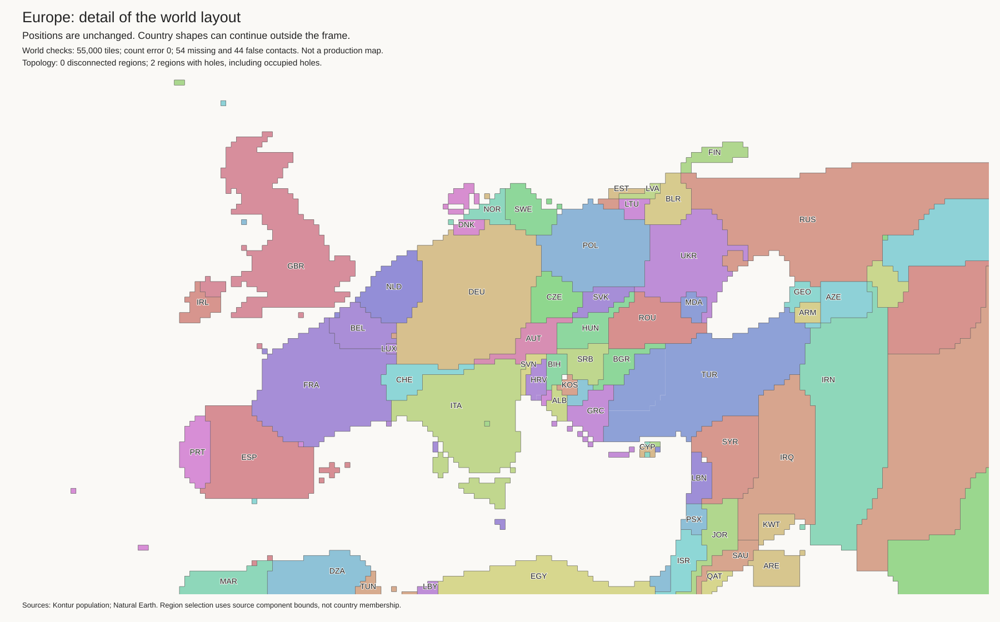
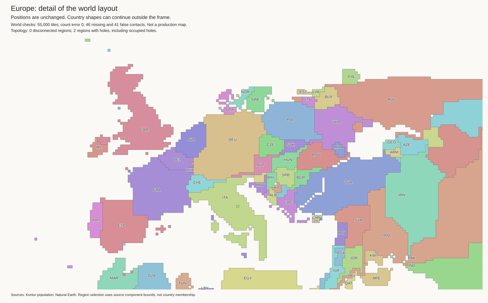
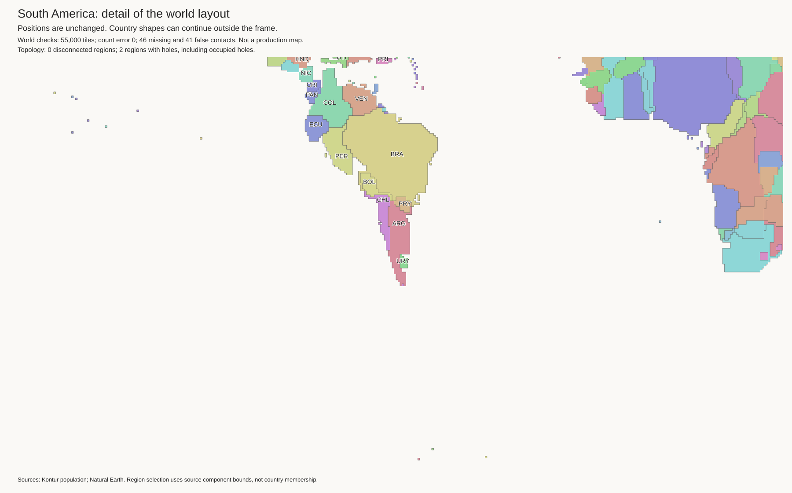
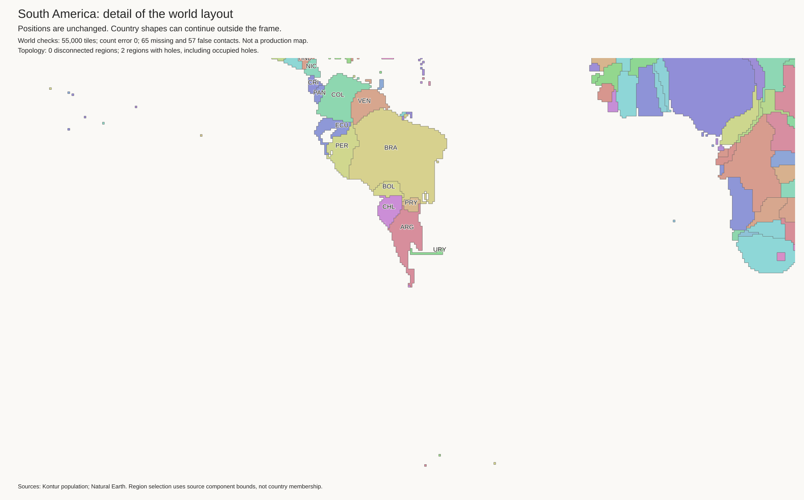
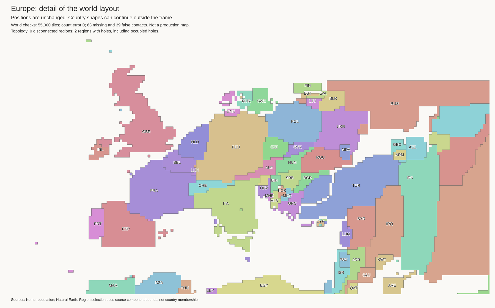
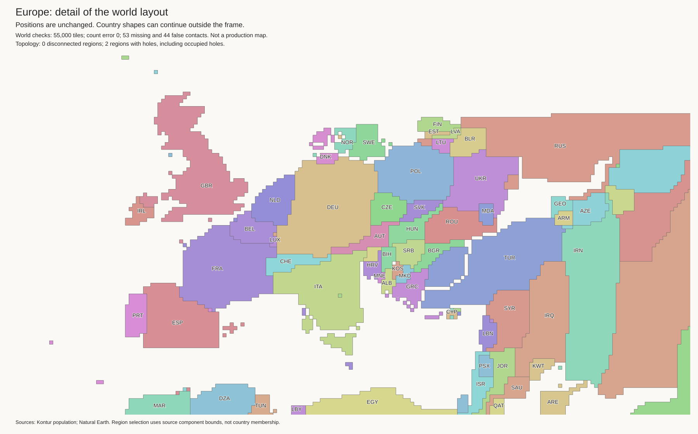
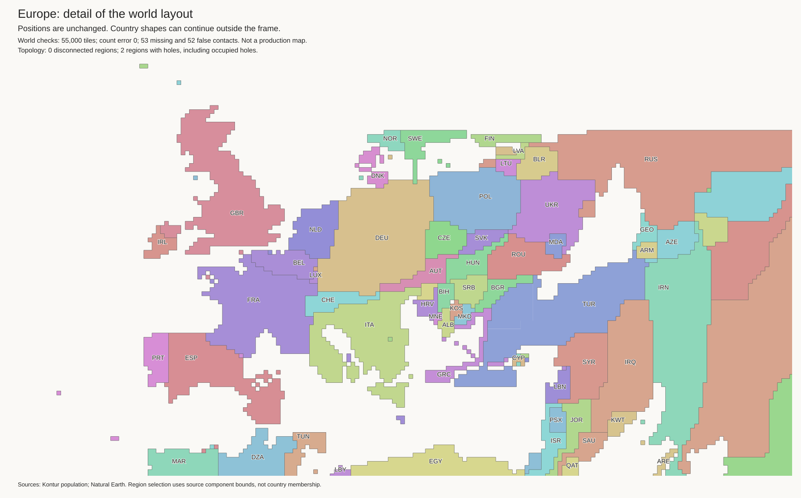

No candidate on this page is approved. The published map is unchanged. All candidates retain 55,000 tiles and exact component budgets. They do not split source-connected landmasses. These checks do not prove that country positions or coasts are correct.
Work log · Island tests · Full-rebuild water tests
| Layout | Missing borders | False borders | Possible lost coasts | Possible false coasts |
|---|---|---|---|---|
| Baseline | 59 | 55 | 21 | 7 |
| Rigid translations with axis guards | 54 | 44 | 18 | 7 |
| Native shapes, then another translation pass | 46 | 41 | 19 | 3 |
Coast flags use 512 boundary samples per source component. They are review flags, not verified ocean-access tests.
Native shape guidance improves Chile's outline. But the Nordic relationships still fail. A thin connection between North and South Korea is also visible. The method must change positions and shapes together. Better border totals are not sufficient.


Finland joins the correct Russian component. Norway and Sweden still touch the wrong neighbours. The rigid shapes cannot fit all the required relationships.



Records: geography audit, coast audit, refinement settings, final translations, tile layout. This layout is not a new population export.
Uruguay gains a thin extension.

The Baltic remains compressed.

Border totals improve, but water relationships do not.

A wider Baltic gap comes with a thin Swedish connection towards Germany.
